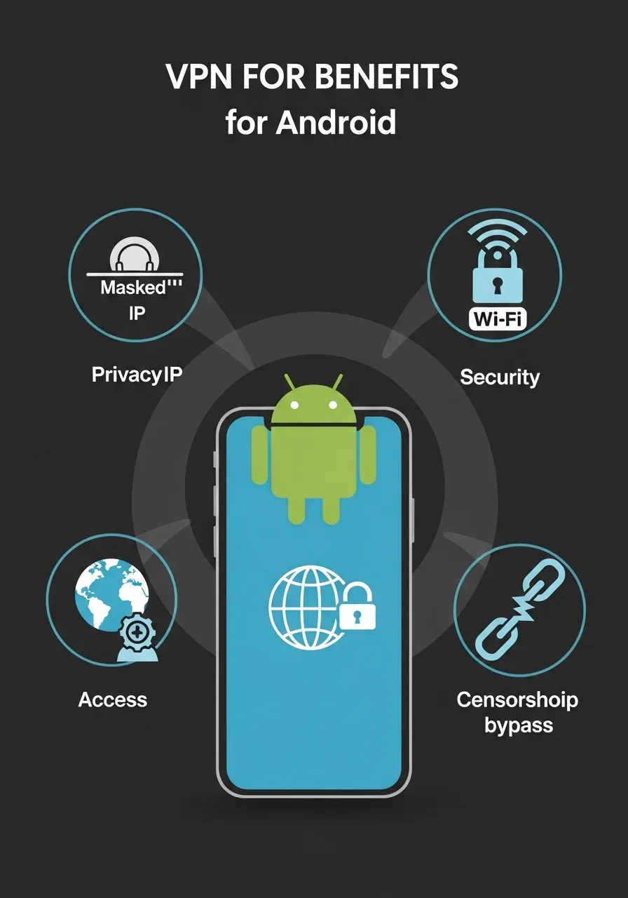
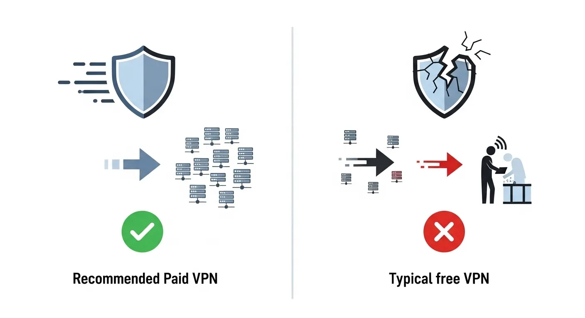

Почему VPN для Android важен в 2026 году?
В 2026 году мобильные устройства стали неотъемлемой частью нашей жизни, а вместе с ними выросла и потребность в защите личных данных. Использование VPN для Андроид 2026 – это не просто удобство, а необходимость для безопасности и свободы в интернете. Но как не потеряться в многообразии предложений и выбрать по-настоящему лучший VPN для Андроид? Мы поможем вам разобраться.
VPN (Virtual Private Network) создает зашифрованный туннель между вашим Android-устройством и интернетом, скрывая ваш реальный IP-адрес и защищая данные от перехвата. Это особенно актуально в эпоху постоянно растущих киберугроз и ограничений доступа к информации.

Для чего нужен VPN на Android?
VPN на вашем смартфоне открывает множество возможностей и решает ряд важных задач:
- Повышение конфиденциальности: Маскировка вашего реального IP-адреса затрудняет отслеживание вашей онлайн-активности интернет-провайдерами, рекламодателями и другими сторонними лицами.
- Безопасность в публичных сетях Wi-Fi: Общественные Wi-Fi сети часто незащищены, что делает ваши данные уязвимыми. VPN шифрует ваш трафик, защищая его от хакеров.
- Доступ к заблокированному контенту: VPN может помочь обойти географические ограничения, предоставляя доступ к сайтам, стриминговым сервисам и приложениям, недоступным в вашем регионе.
- Защита от цензуры: В некоторых странах VPN является единственным способом получить доступ к свободному интернету.
- Обход ограничений скорости: Некоторые провайдеры могут ограничивать скорость для определенных видов трафика. VPN может помочь избежать таких ограничений.
Как работает VPN на вашем смартфоне?
Когда вы включаете VPN на своем Android-устройстве, все данные, которые отправляются или принимаются, сначала проходят через VPN-сервер. Этот сервер шифрует данные, а затем отправляет их в интернет. Для внешнего мира ваш трафик выглядит так, будто исходит с IP-адреса VPN-сервера, а не с вашего реального устройства. Это создает дополнительный уровень защиты и анонимности.
На что обратить внимание при выборе VPN для Android в 2026 году?
Выбор подходящего VPN-сервиса — это ключ к вашей онлайн-безопасности. Вот основные критерии, которые следует учитывать:
- Надежность и репутация: Ищите сервисы с доказанной историей защиты данных пользователей.
- Политика отсутствия логов (No-Log Policy): Убедитесь, что VPN-провайдер не хранит записи вашей онлайн-активности.
- Протоколы шифрования: Современные протоколы, такие как OpenVPN, WireGuard, IKEv2, обеспечивают высокий уровень безопасности.
- Скорость соединения: Хороший VPN должен минимизировать падение скорости интернета. Тестирование скорости важно.
- Количество серверов и их расположение: Чем больше серверов в разных странах, тем шире возможности для обхода гео-ограничений и получения стабильного соединения.
- Поддержка Android: Убедитесь, что у сервиса есть удобное и функциональное приложение для Android.
- Цена: Сравните стоимость подписки с предлагаемыми функциями. Часто платные сервисы предлагают гораздо больше, чем бесплатные.
- Поддержка клиентов: Наличие быстрой и квалифицированной службы поддержки может быть очень полезным.
Кому подойдет рекомендуемый сервис: Преимущества и сценарии использования
Рекомендуемый сервис VPN разработан для широкого круга пользователей Android, стремящихся к максимальной конфиденциальности и свободе в интернете. Он идеально подходит для:
- Активных пользователей мобильного интернета: Тех, кто часто подключается к публичным Wi-Fi сетям в кафе, аэропортах или торговых центрах, и хочет защитить свои данные от перехвата.
- Любителей стриминга и онлайн-игр: Тех, кто хочет получить доступ к контенту, недоступному в их регионе, или снизить задержки в играх за счет подключения к ближайшему серверу.
- Пользователей, заботящихся о конфиденциальности: Тех, кто не желает, чтобы их онлайн-активность отслеживалась интернет-провайдерами или рекламными компаниями.
- Путешественников: Тех, кто часто бывает за границей и хочет иметь доступ к привычным домашним сервисам или обеспечить безопасность своих данных в незнакомых сетях.
- Бизнес-пользователей: Тех, кто работает удаленно и нуждается в безопасном доступе к корпоративным ресурсам.
Плюсы и минусы рекомендуемого VPN
Как и любой сервис, рекомендуемый VPN имеет свои сильные и слабые стороны. Важно их учитывать при принятии решения.
Плюсы:
- Простота использования: Приложение для Android очень интуитивно понятно, что позволяет быстро начать работу даже новичкам.
- Надежное шифрование: Поддерживает современные протоколы, которые помогают защитить ваш трафик.
- Широкая сеть серверов: Наличие серверов в разных странах мира может помочь обеспечить стабильное соединение и доступ к глобальному контенту.
- Политика отсутствия логов: Сервис заявляет о строгой политике отказа от ведения журналов, что помогает повысить конфиденциальность пользователей.
- Скорость: В большинстве случаев обеспечивает приемлемую скорость соединения, хотя она может варьироваться в зависимости от выбранного сервера и загруженности сети.
- Отсутствие полностью бесплатной версии: Хотя предлагаются пробные периоды, полноценный доступ требует подписки. Однако это часто является залогом качества и безопасности.
- Скорость может варьироваться: Как и у любого VPN, скорость может зависеть от расстояния до сервера и его загруженности.
- Может потребоваться настройка для продвинутых функций: Некоторые специфические настройки могут быть неочевидны для новичков.
Сравнение: Рекомендуемый VPN против бесплатных аналогов
Многие пользователи ищут лучший бесплатный VPN Android, но важно понимать, что бесплатные сервисы часто имеют скрытые изъяны. Давайте сравним рекомендуемый сервис с типичными бесплатными предложениями.
| Характеристика | Рекомендуемый VPN | Типичный бесплатный VPN |
|---|---|---|
| Безопасность | Высокая: современные протоколы, надежное шифрование | Низкая: устаревшие протоколы, потенциальные утечки данных |
| Конфиденциальность | Политика отсутствия логов, защита IP | Могут собирать данные, продавать информацию |
| Скорость | Стабильно хорошая, зависит от сервера | Очень низкая, частые обрывы, ограничения трафика |
| Количество серверов | Широкая сеть в разных странах | Ограниченное количество, перегруженные серверы |
| Поддержка | Доступная, квалифицированная | Отсутствует или очень ограничена |
| Реклама | Отсутствует | Встроенная, навязчивая реклама |
| Доступ к контенту | Высокий, обходит большинство гео-ограничений | Ограниченный, часто блокируется |

Как видно из таблицы, хотя бесплатные VPN могут показаться привлекательными, они часто компрометируют вашу безопасность и удобство использования. Для действительно надежной защиты и полноценного доступа к интернету в 2026 году лучше выбирать проверенные платные решения.
На что обратить внимание перед установкой VPN
Прежде чем установить VPN на Андроид, убедитесь в следующем:
- Совместимость устройства: Проверьте, поддерживает ли ваш смартфон текущую версию Android, необходимую для работы приложения VPN.
- Достаточное место: Убедитесь, что на вашем устройстве достаточно свободного места для установки приложения.
- Разрешения приложения: При установке VPN-приложение запросит определенные разрешения. Ознакомьтесь с ними, чтобы понять, к каким функциям вашего телефона оно будет иметь доступ.
- Пробный период: Если сервис предлагает пробный период, используйте его, чтобы оценить скорость, стабильность и функционал перед оформлением подписки.
Как установить VPN на Android: Пошаговое руководство
Установка рекомендуемого VPN-сервиса на ваш Android-смартфон — это простой процесс, который займет всего несколько минут:
1. Откройте Google Play Store: Найдите иконку Play Store на вашем устройстве и нажмите на нее. 2. Найдите приложение: В строке поиска введите название рекомендуемого VPN-сервиса и нажмите Enter. 3. Загрузите и установите: Выберите официальное приложение из результатов поиска и нажмите кнопку "Установить". Дождитесь завершения загрузки и установки. 4. Откройте приложение: После установки нажмите "Открыть" или найдите иконку приложения на главном экране. 5. Зарегистрируйтесь или войдите: Если у вас еще нет аккаунта, создайте его, следуя инструкциям. Если есть, войдите в свою учетную запись. 6. Подключитесь к серверу: В приложении выберите желаемую страну или просто нажмите кнопку "Быстрое подключение" (Quick Connect) для автоматического выбора оптимального сервера. 7. Разрешите VPN-подключение: Android запросит разрешение на создание VPN-соединения. Подтвердите его.
Поздравляем! Ваш VPN активен, и вы можете наслаждаться безопасным и свободным интернетом. Если у вас возникнут вопросы, обратитесь в службу поддержки сервиса.
Часто задаваемые вопросы (FAQ)
Безопасно ли использовать VPN на Android?
Да, использование надежного VPN-сервиса на Android безопасно. Он помогает защитить ваши данные от перехвата и повысить конфиденциальность, особенно при использовании публичных Wi-Fi сетей. Важно выбирать проверенные сервисы с хорошей репутацией и политикой отсутствия логов.
Может ли бесплатный VPN быть надежным?
Большинство бесплатных VPN-сервисов не могут предложить тот же уровень безопасности, конфиденциальности и скорости, что и платные. Они часто компенсируют свои затраты за счет показа рекламы, ограничения трафика или даже сбора и продажи данных пользователей. Для серьезной защиты рекомендуется выбирать платные решения.
Как VPN влияет на скорость интернета?
VPN добавляет дополнительный этап шифрования и маршрутизации, что может незначительно снизить скорость интернета. Однако современные платные VPN-сервисы оптимизированы для минимизации этого эффекта. Скорость также сильно зависит от выбранного сервера (его удаленности и загруженности) и мощности вашего устройства.
Нужен ли мне VPN, если я использую мобильный интернет?
Да, VPN полезен даже при использовании мобильного интернета. Он помогает предотвратить отслеживание вашей активности мобильным оператором и защищает вас от потенциальных угроз, особенно если вы часто переключаетесь между сетями или используете точки доступа.
Что делать, если VPN не подключается?
Если ваш VPN не подключается, попробуйте следующие шаги: 1) Проверьте ваше интернет-соединение. 2) Попробуйте подключиться к другому серверу. 3) Перезапустите приложение VPN. 4) Очистите кэш приложения или переустановите его. 5) Обратитесь в службу поддержки вашего VPN-провайдера.
Заключение: Ваш выбор для безопасного интернета в 2026 году
Выбор лучшего VPN для Андроид в 2026 году – это инвестиция в вашу цифровую безопасность и свободу. Учитывая рост киберугроз и постоянные изменения в интернет-среде, надежный VPN становится не просто удобством, а необходимостью. Рекомендуемый сервис предлагает сбалансированное решение для пользователей Android, обеспечивая простоту использования, высокую степень защиты и доступ к глобальной сети. Не упустите возможность обезопасить свою онлайн-жизнь уже сегодня. Ваш выбор – ваша безопасность!
Раскрытие информации: Некоторые ссылки на этой странице могут быть партнерскими. Это означает, что мы можем получить комиссию, если вы перейдете по ссылке и выполните целевое действие. Для вас это ничего не меняет и помогает нам поддерживать проект.